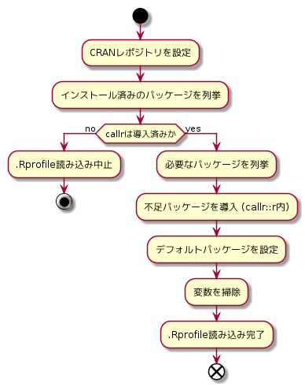

.Rprofileを使って
いつも使うパッケージはR起動時に読み込む
例えば， tidyverse を読み込みたいなら，
options(defaultPackages = c(getOption('defaultPackages'), 'tidyverse'))とする．
library ではなく options を利用することで，filter() で dplyr::filter() を呼ぶつもりが stats::filter() を呼んでしまうような事故を防げる．
不足パッケージをインストールしたい
これは一筋縄ではいかず，私は callr::r() を使うことで解決した．
pkg_installed <- rownames(installed.packages()) # インストール済みパッケージの列挙
pkg_required <- 'tidyverse' # 欲しいパッケージの列挙
pkg_missing <- setdiff(pkg_required, pkg_installed) # 不足パッケージの列挙
if(length(pkg_missing) > 0) # 不足パッケージのインストール
callr::r(
func = function(pkg) utils::install.packages(pkg), # 実行したい関数
args = list(pkg = pkg_required), # 関数に与える引数のリスト
repos = c(CRAN = "https://cran.ism.ac.jp/"), # レポジトリの設定
user_profile = FALSE, # .Rprofile を読み込まないよう設定
system_profile = FALSE # .Rprofile.site を読み込まないよう設定
)callr::r() は do.call のプロセス分離版と思えばいい．
第一引数 func に実行したい関数，第二引数 args に func に与える引数をリストで与える．
プロセスが異なる都合上，レポジトリを設定したり，.Rprofile や .Rprofile.site を読み込むか否かを設定できる．
.Rprofile や .Rprofile.site は，以前はデフォルトで読み込んでいたが，今は読み込まないらしい．
確実を期して user_profile = FALSE , system_profile = FALSE として明示的に読み込みを防ごう．
特に .Rprofile を読み込み直されると，パッケージインストール前に .Rprofile を読み込み直すことを繰り返してしまう．
ちなみに callr を使わず， install.packages() するとパッケージインストール前に .Rprofile を読み込み直すため無限地獄に落ちる．
GitHubパッケージも似た要領で devtools::install_packages を組み合わせればOK．
必要なパッケージを適宜インストールしつつ読み込みたい
以上の内容を組み合わせると，大体こんな流れになる．
callr だけは手動でインストールしなければならない．

以上を踏まえた上で，
- CRANパッケージに加え，GitHubパッケージに対応
devtools::install_githubを必要とするので 必要なCRANパッケージにdevtoolsまたは，devtoolsに依存するパッケージを指定しておく． 今回はpacmanを入れた．- 下記コードではGitHub版パッケージがCRAN版に優先されるので注意．
- プロジェクトルートに
.Rprofileがなければコピー- プロジェクトの再現性確保のため
という設定を加えたものが以下．
# Copy .Rprofile to project root
if(!file.exists('.Rprofile') && dir(pattern = '\\.Rproj$') > 0)
file.copy('~/R/.Rprofile', '.Rprofile')
# Tokyo as default CRAN mirror
options(repos = c(CRAN = "https://cran.ism.ac.jp/"))
# Pkg
## Installed packages
installed <- rownames(utils::installed.packages())
## Stop if callr not installed
if(!('callr' %in% installed)) stop('Install callr to load .Rprofile')
## Required packages on CRAN and GitHub
cran <- c(
'data.table',
'dplyr',
'ggplot2',
'here',
'pacman',
'pipeR',
'purrr',
'stringr',
'tidyr'
)
gh <- c('atusy/mytools')
gh2 <- gsub('.*/', '', gh)
## Which required packages are not installed?
cran_missing <- setdiff(c('devtools', cran), installed)
gh_missing <- gh[!(gh2 %in% installed)]
## Install missing packages
callr::r(
function(cran, gh) {
if(length(cran) > 0) utils::install.packages(cran)
if(length(gh) > 0) devtools::install_github(gh)
invisible(NULL)
},
args = list(cran = cran_missing, gh = gh_missing),
repos = getOption('repos'),
user_profile = FALSE
)
## Set default packages
options(defaultPackages =
c(getOption('defaultPackages'), cran, gh2)
# Remove values
rm(installed, cran, gh, gh2)